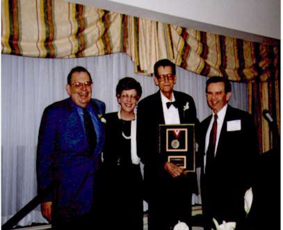

Peter Lundin's Corner Peter was always willing to share his own triumphs and his own trials with any problem that dominated his life at the time. One always knew when reading Peter's comments that what he was saying to the reader was also being recited to himself. There will never be another Peter Lundin, and these pages, these flickering binary lights of computer text, dim though they are compared to the man, himself, must serve future readers as a reflection of the person we once knew as Peter Lundin. Steve Fadem It is rare in our specialty to find one who is both a physician and an ESRD patient. Such a person lends invaluable insight to both his peers and his patients. Dr. Pete Lundin was a frequent participant on Dialysis Patients On-line, and some of his practical and useful contributions have been reproduced here with his permission. We have also linked to some of the best articles that Peter wrote for Renalife, a publication of AAKP, the American Association of Kidney Patients, a organization that Peter loved, and help found. In September, 2004, I was awarded the Peter Lundin Award from AAKP. To me, the highest tribule that one can pay to any physician is to honor him in the memory of someone whose attributes we all aspire to have. This is a great honor for me. Special thanks to Dale Ester, himself a truly remarkable person, for his assistance. Please see Dale's tribule to Peter Lundin. Also, see Richard Berge's Tribute to Peter Lundin Stephen Z. Fadem, M.D., FACP Remember, this information is for education purposes only. Please consult your own physician for specific treatment recommendations. All medical and therapeutic decisions must come from your health care provider.The information obtained through this service, and the information which you receive through the Internet is only for general guideline purposes, and is not an ultimate source of information, nor something which you should rely on as a sole source for your medical care. The authors, editors, producers, sponsors, and contributors shall have no liability, obligation or responsibility to any person or entity for any loss, damage, adverse consequence alleged to have happened directly or indirectly as a consequence of this material. |